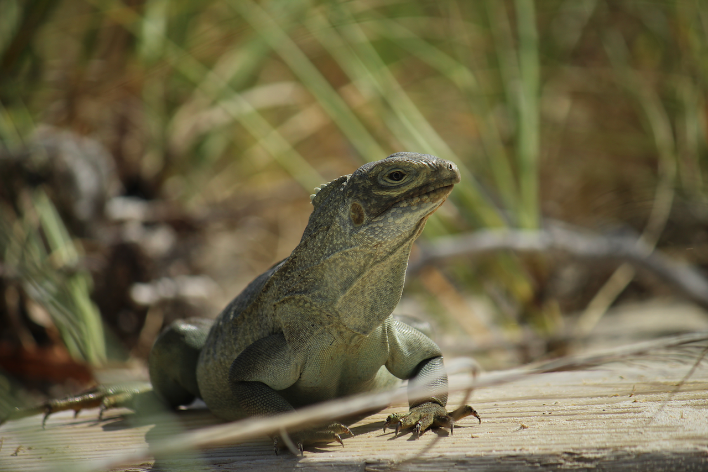
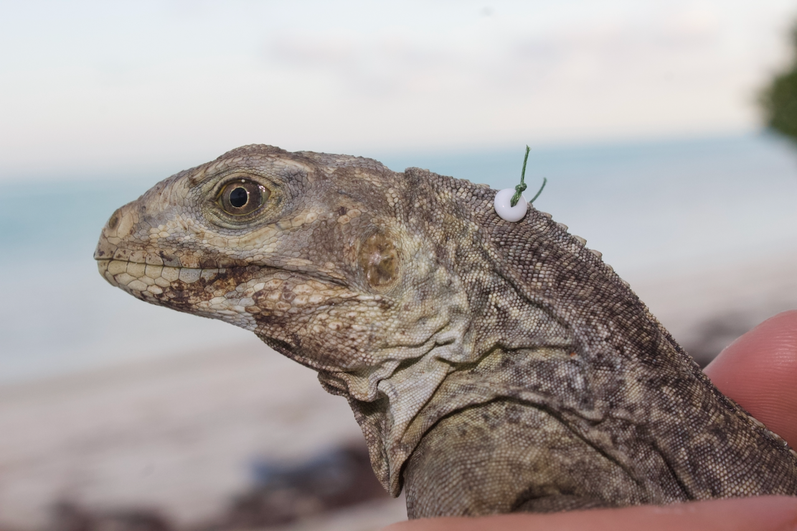
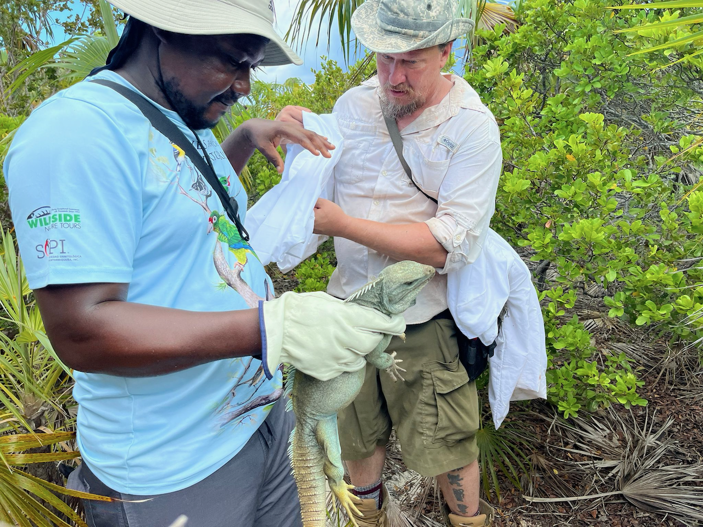
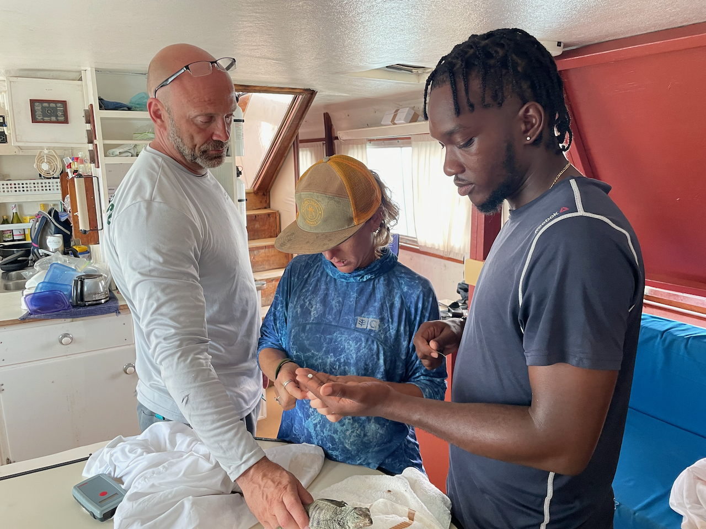
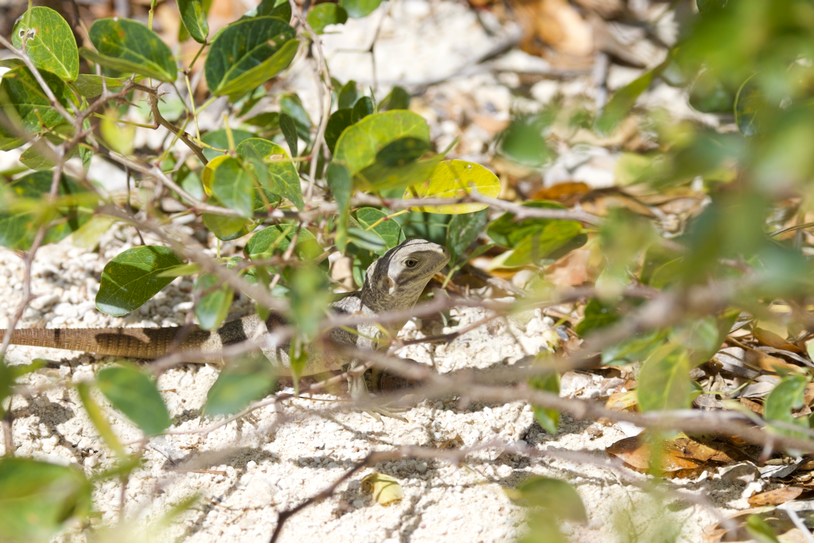

An interactive map showing the Turks and Caicos Archipelago and the relative position of source and recipient sites used for the translocation.
Translocation of Cyclura carinata from Little Water Cay to Grouper Cay.
Field work
Conservation
Cyclura
Turks and Caicos
Reintroducing iguanas to one of their old homes
This summer, in the midst of the heat wave of late July and early August, we performed a translocation of Cyclura carinata individuals, the Turks and Caicos Rock Iguana, from Little Water Cay to Grouper Cay! Keep reading if you want to know more about this project and how it came about.

Cyclura carinata is endemic to the Turks and Caicos Islands (TCI), a small and beautiful archipelago located north of Hispaniola Island (Haiti and Dominican Republic), in the Caribbean Sea. A species is defined endemic when it is native to a specific region and when it naturally can be found only in that particular area. Turks and Caicos Rock Iguanas is, in fact, native to the TCI and can only be found in this archipelago. The only exception is represented by a small population of TCI Rock Iguanas found on Booby Cay, The Bahamas. Genetic studies have recently demonstrated that the Booby Cay population is the outcome of a past introduction event (Welch et al., 2017). Once occupying almost every single island in the TCI, the distribution range of C carinata dramatically decreased and they are considered extirpated from ca. 95% of their former range (Gerber, 2007).
The progressive reduction of their range, largely due to the intense development and construction activity on many islands, and the presence of introduced feral mammals (cats, dogs, rats, donkeys, pigs), caused, in 2004, the listing of this species as Critically Endangered (CR) in the International Union for the Conservation of Nature (IUCN) Red-List of Threatened Species (Gerber, 2004). This means that there is a concrete risk of extinction if no management actions are pursued.
A group of international researchers and volunteers, collaborating with local institutions like the Department of Environment and Coastal Resources (DECR) and the Turks and Caicos National Trust (TCINT), has been working for many years to ensure that this species could persist and thrive in its natural habitat. Thanks to their work, the implementation of different conservation strategies, and the involvement of local communities, the species has recently been down-listed from CR to Endangered (EN) in the IUCN Red-List of Threatened Species (Gerber et al., 2020). Although this represents very good news, it does not mean that conservation efforts can come to a stop. On the contrary, as the species persistence is still challenged by new development and the presence of introduced feral mammals, the level of guard and attention should not dim.

Among different conservation strategies, individuals translocation has proven an effective measure for TCI iguanas. A translocation of individuals entails the collection of adults (or young adults) from a source population to be introduced in a recipient area, usually identified within the historical range of a species. If no historical areas are available or known, a new location can also be selected as recipient area, as long as it presents the appropriate characteristics for the species to thrive.
A first translocation program was conducted in 2002 and 2003 (Gerber et al., 2004; Gerber, 2007). This year, following up on an intensive project to eradicate invasive mammals from some of the islands in the vicinity of Providenciales, another translocation was performed. Between July and August 2023 we moved 74 adults from Little Water Cay to Grouper Cay. The project authorized by the Scientific Research Permit No. 2023-06-30-32 issued by DECR, was funded through a Darwin grant and leaded by senior research scientist Dr. Glenn Gerber (San Diego Zoo Wildlife Alliance). We received support from many local political institutions as well from local tour operators.

Once captured, individuals are measured and sexed to make sure that an equal ratio of males and females are moved. Every individual is also assigned a unique identifier (Passive Integrated Trasponder-PIT), very much like the transponders that are used for house cats and dogs. These identifiers will ensure that, if recaptured in the future, that individual will be recognized as one of the animals already sampled. This is a more permanent solution to the application of colored beads. As beads are exposed, they can, eventually, fall from the animal following a fight between individual or the mating between males and females or simply because the wire used for attaching them to the nucal crest breaks.

In future years it will be necessary to monitor the recipient island of Grouper Cay to make sure that the translocated animals have successfully acclimated to the new island. The best way to monitor the success of a translocation is to document the reproduction of the translocated individuals. In the next few years we will monitor for the presence of hatchlings or yearlings. Stay tuned.

Did you like this post? Drop a comment down here or let me know by e-mail what you think of it or if you have questions or curiosities. Till next time.
Cheers
References
Gerber, G.P. 2004. Cyclura carinata. The IUCN Red List of Threatened Species 2004: e.T6026A12317199.
Gerber, G.P. 2007. Turks and Caicos iguana translocation program, Bahama Archipelago. In: Re-introduction news. Newsletter of the IUCN/SSC re-introduction specialist group, abu dhabi, UAE. (P. S. Soorae, ed), p. 53. Abu Dhabi: IUCN/SSC Re-Introduction Specialist Group.
Gerber, G.P., Colosimo, G. and Grant, T.D. 2020. Cyclura carinata. The IUCN Red List of Threatened Species.
Gerber, G.P., Keener, L., Jezier, B., Czekala, N.M., MacDonald, E.A. and Alberts, A.C. 2004. Effects of translocation on the blood chemistry, hematology, and endocrinology of critically endangered Turks and Caicos iguanas, (Cyclura carinata). In: American association of zoo veterinarians, p. 568.
Welch, M.E., Colosimo, G., Pasachnik, S.A., Malone, C.L., Hilton, J., Long, J., et al. 2017. Molecular variation and population structure in critically endangered Turks and Caicos Rock Iguanas: identifying intraspecific conservation units and revising subspecific taxonomy. Conservation Genetics, 18: 479–493.